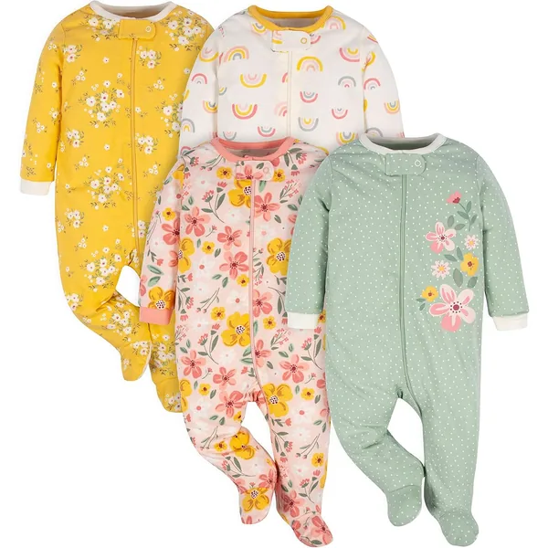
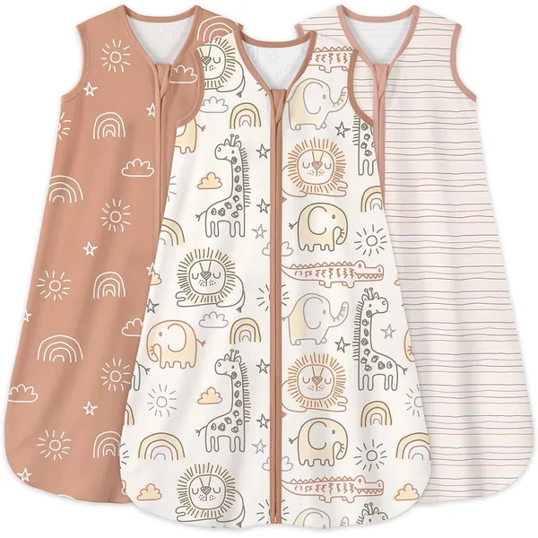
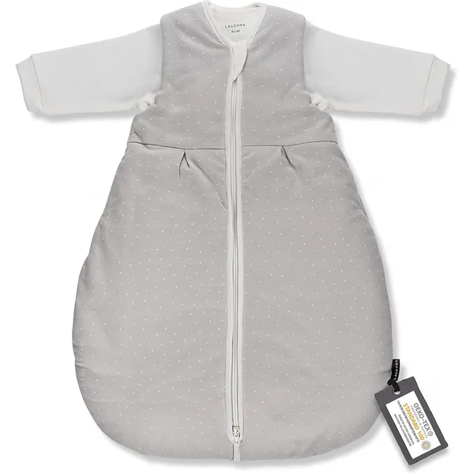
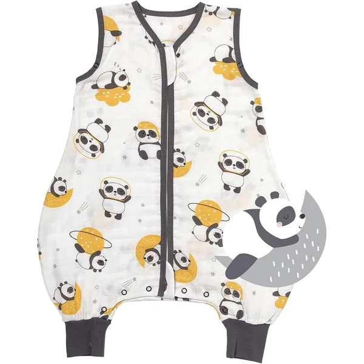

Enxoval completo
Enxoval de Recém-Nascido
A lista de enxoval de bebé que realmente se usa em Portugal — dos primeiros bodies aos sacos de dormir, com as quantidades certas por tamanho.
Os links desta página são links de afiliado da Amazon: se comprares através deles recebemos uma pequena comissão, sem custo adicional para ti. Nenhuma marca paga para aparecer aqui — vê os nossos critérios.
A preparar a mala da maternidade? Vê a lista completa →Comparação rápida
Todos os produtos desta página numa tabela, para comparares antes de descer aos detalhes. Cada linha liga diretamente à Amazon.
Tabela comparativa9 produtos
| Produto | Secção | Melhor para | Material | Idades | Preço | Link para a Amazon |
|---|---|---|---|---|---|---|
| Pack 6 Bodies Manga Curta e Longa + CalçasChicco | Bodies | O enxoval base | 100% algodão | RN–24M | €€ | Ver na Amazon |
| Pack 5 Bodies Orgânicos Manga Curta e LongaPré Natal | Bodies | Pele sensível | Algodão orgânico GOTS | RN–24M | €€ | Ver na Amazon |
| Pack 4 Bodies sem Mangas 100% AlgodãoChicco | Bodies | Verão e camada interior | 100% algodão | RN–12M | € | Ver na Amazon |
| Pijama Algodão OrgânicoLuaCoco | Pijamas | Mudas noturnas | Algodão orgânico | RN–12M | €€€ | Ver na Amazon |
| Pijama para bebé Algodão OrgânicoBramble & Bear | Pijamas | Usar todo o dia | Algodão | RN–12M | €€ | Ver na Amazon |
| Pack 4 Pijamas com Pés 100% AlgodãoGerber | Pijamas | Quem precisa de quantidade | 100% algodão | RN–9M | € | Ver na Amazon |
| Saco de dormir 100% algodão 0,5 TOGYoofoss | Sacos de Dormir | Noites acima de 22 °C | 100% algodão | 0–36M | €€ | Ver na Amazon |
| Saco de dormir para bebé, 2 peçasLaLoona | Sacos de Dormir | Meia-estação | Algodão | 0–24M | €€ | Ver na Amazon |
| Saco de dormir para o verãoSlumbersac | Sacos de Dormir | Calor seco | Musselina de algodão | 0–36M | €€ | Ver na Amazon |
Dica de mãe: quanto enxoval comprar?
Para os primeiros 3 meses, recomendamos 6–8 bodies de manga curta, 4–6 de manga longa, 3–4 pijamas com pés e 2 sacos de dormir. Os bebés crescem muito rápido — não compres demasiado de cada tamanho!
Bodies & Macacões
O body é a peça que o bebé usa todos os dias, por baixo de tudo o resto. Compra-se aos packs e gasta-se depressa: conta 6 a 8 de manga curta e 4 a 6 de manga longa para os primeiros três meses. Na dúvida sobre que tamanho comprar, vê a tabela de tamanhos por altura e idade.
Vê a lista de enxoval completa →
Pack 6 Bodies Manga Curta e Longa + Calças
- 100% algodão
- RN–24M
- Pack de 6
Porque escolhemos: resolve a maior parte do enxoval num só pack. O fecho entre as pernas abre por completo, o que faz diferença às três da manhã, e o algodão aguenta lavagens diárias sem perder a forma.
Ver na Amazon
Pack 5 Bodies Orgânicos Manga Curta e Longa
- Algodão orgânico
- GOTS
- Pack de 5
Porque escolhemos: a certificação GOTS cobre o cultivo e o processamento, não só o tecido final. É o pack que escolheríamos para uma pele que reage a tudo.
Ver na Amazon
Pack 4 Bodies sem Mangas 100% Algodão
- 100% algodão
- Sem mangas
- Pack de 4
Porque escolhemos: a peça mais usada no verão português. A abertura em envelope no pescoço deixa tirar o body por baixo quando há acidentes, em vez de o passar pela cabeça.
Ver na AmazonPijamas & Macacões com Pés
Um pijama de bebé é julgado por uma coisa só: a rapidez com que se abre às quatro da manhã. Fechos magnéticos e de correr ganham sempre a botões de pressão.

Pijama Algodão Orgânico
- Algodão orgânico
- Fecho magnético
Porque escolhemos: o fecho magnético fecha sozinho ao encostar. Numa muda de fralda às quatro da manhã, com o bebé a contorcer-se, isso vale bastante mais do que parece no papel.
Ver na Amazon
Pijama para bebé Algodão Orgânico
- Algodão
- Pijama inteiro
- Multi-pack
Porque escolhemos: pijama inteiro em multi-pack, macio o suficiente para o bebé ficar com ele de dia sem parecer que anda de pijama. Vem em conjunto, o que baixa o preço por peça.
Ver na Amazon
Pack 4 Pijamas com Pés 100% Algodão
- 100% algodão
- Com pés
- Pack de 4
- RN–9M
Porque escolhemos: quatro pijamas com pés pelo que muitas lojas pedem por um. Os pés fechados poupam a caça diária às meias perdidas no fundo do berço.
Ver na AmazonSacos de Dormir
O saco substitui o cobertor, que não deve ir ao berço no primeiro ano. O número que interessa é o TOG — quanto mais alto, mais quente.
Lê o guia completo de TOG e tamanhos →Qual o TOG certo?
TOG 0.5 para quartos acima de 24°C, TOG 1.0 entre 22 e 24°C, TOG 1.5 entre 18 e 22°C (o mais versátil em Portugal) e TOG 2.5 entre 16 e 18°C.

Saco de dormir 100% algodão 0,5 TOG
- 100% algodão
- 0,5 TOG
- Fecho de 2 vias
Porque escolhemos: 0,5 TOG é o que faz sentido num verão português sem ar condicionado. O fecho de duas vias abre por baixo, o que permite mudar a fralda sem despir o saco todo.
Ver na Amazon
Saco de dormir para bebé, 2 peças
- 2 em 1
- 0,5 TOG
- Com e sem mangas
Porque escolhemos: são dois sacos num: o interior com mangas de 0,5 TOG e um exterior sem mangas que se junta quando arrefece. Cobre mais meses do ano do que um saco de TOG fixo.
Ver na Amazon
Saco de dormir para o verão
- Musselina
- 0,5 TOG
- Padrão panda
Porque escolhemos: musselina de 0,5 TOG, o tecido mais leve desta lista. Para quartos que aquecem muito à noite, deixa o bebé tapado sem o sobreaquecer.
Ver na AmazonO que NÃO precisas para os primeiros meses
O enxoval de recém-nascido é onde mais se gasta a mais. Estas são as compras que podes saltar sem hesitar.
- Sapatos e botas. Um recém-nascido não anda. Meias antiderrapantes chegam e perdem-se menos.
- Muita roupa de tamanho RN. Dura semanas, não meses. Compra pouco em RN e mais em 0–3M.
- Almofadas, ninhos e protetores de berço. Nada solto no berço durante o primeiro ano. O saco de dormir substitui o cobertor em segurança.
- Conjuntos de cerimónia em tamanho RN. Quase sempre são usados uma vez, se tanto. Compra-os já em 3–6M.